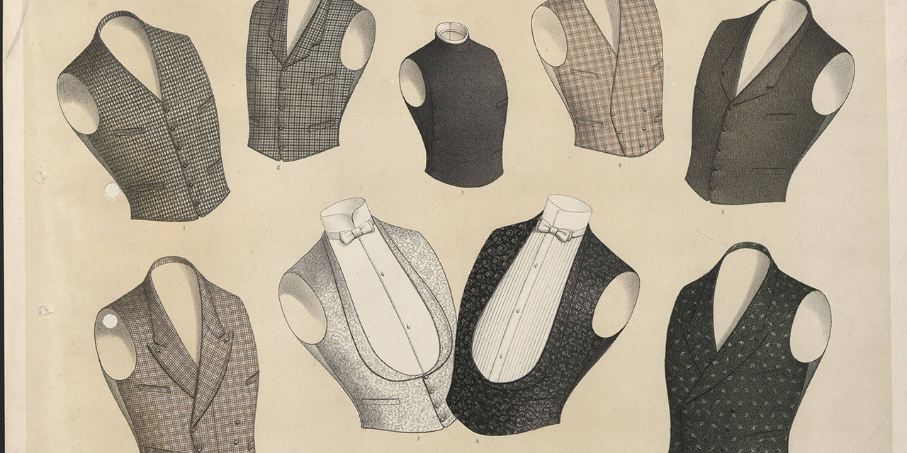
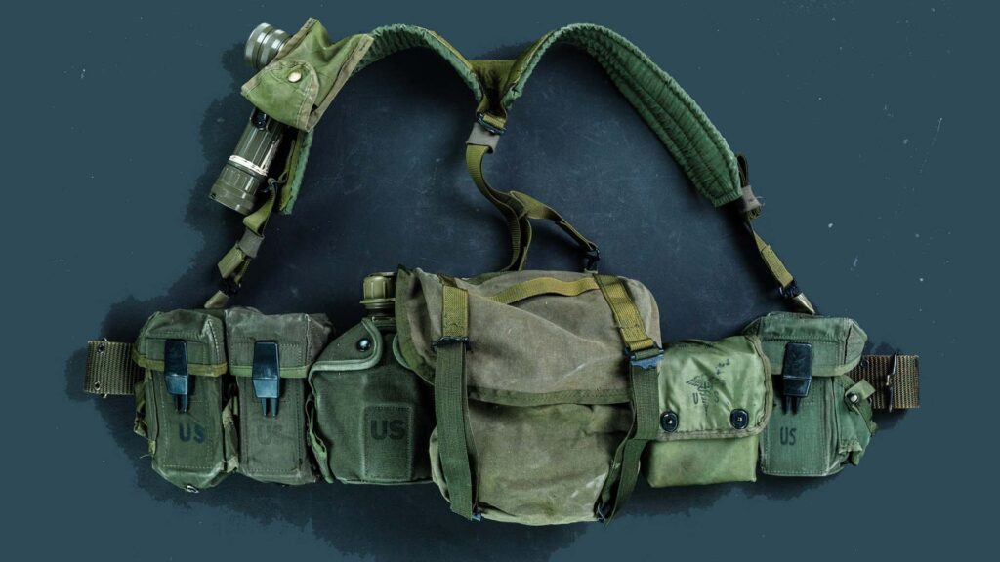
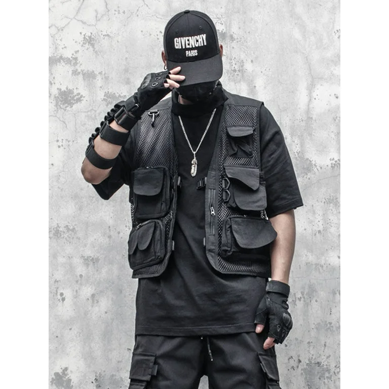
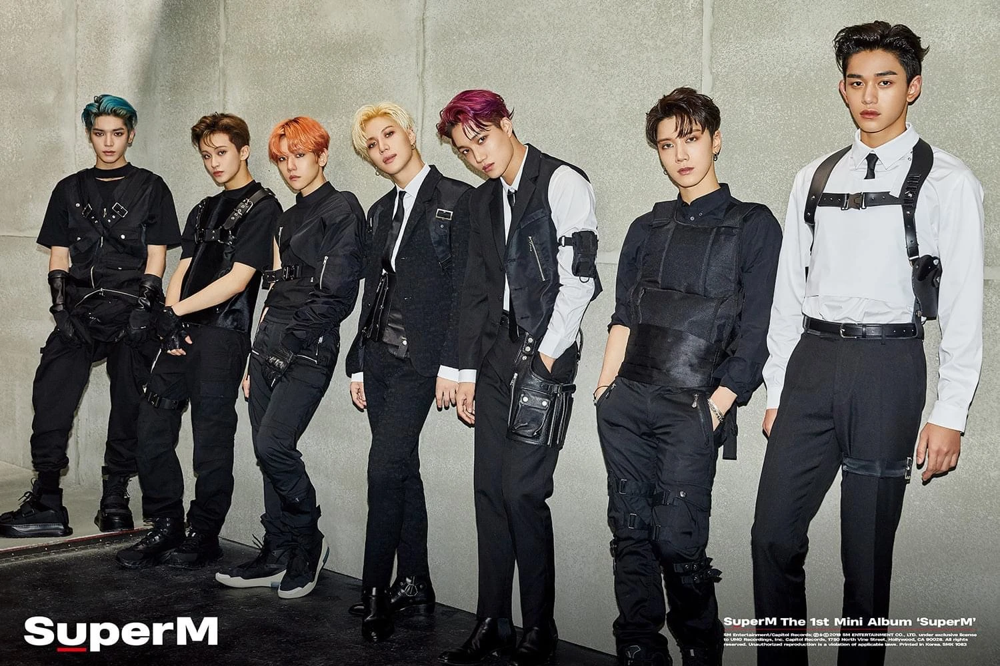
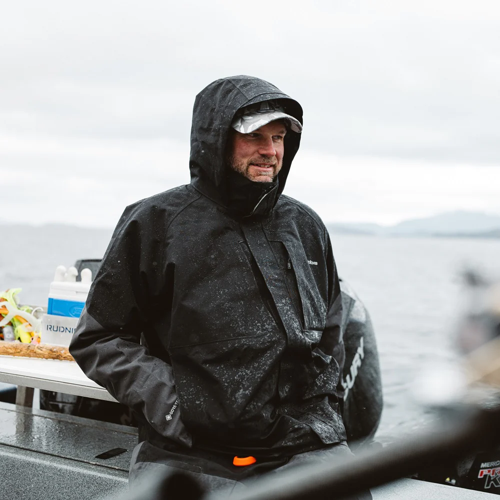

DATE: 2025-05-16
Fashion Log 01: The Vest
I’m a people watcher. I love to watch people - on the streets, shopping at a grocery store, walking in a park - the bustling city life gives me the perfect excuse to go about my business, and to mind others’. But “others” are so much more interesting because I like to see what they are wearing, any designer brands I recognize, and if I can steal any inspiration so I can mix and match from my current closet. As an observer, you notice trends between the youth, middle-aged, and the elderly, and you can imagine what sorts of activities and subcultures invite new clothing options. A few years ago, I had never heard of Stüssy until I saw the young adults, typically skaters and casual athletes, to college students, and now trickling down to late elementary and middle schoolers.
Now that I have proved that I can watch and observe, my real question is the alignment of vests, especially tactical vests (those that are highly functional), and Taiwanese culture. I noticed it everywhere. Not only on protestors, public events, or as a way to distinguish workers from citizens, but high utility fashion gear that adds color, texture, and layers to a maybe dull outfit, without forgoing coolness on a hot, humid (emphasis on hot) day in Taiwan.
It’s important to make a distinction in this article that I am specifically referring to a cargo/utility vest, rather than a vest used as a piece in a suit (the waistcoat). I’ll go into small details for both, starting with the waistcoat.
Emerging in the 17th century Europe as a fashion statement of power for royalty, the waistcoat functioned as an additional layer of clothing, providing warmth and work under coats while also emphasizing the waist, chest, and shoulders (La Jaquette). It later evolved into the statement of the working class, with a more widely recognized and well-established body of knowledge that most people today associate with the 20th century. The workforce began sprouting these garments with sweaters and t-shirts, rather than just suits (Terzi). The history of the waistcoat goes so much deeper, but that will be another article for another day. The main takeaway is how the waistcoat evolved, and the effortless genderless statement it brings to any outfit.
As for the cargo vest, I went to Techwear Shop online to explore the history of this fashion statement. Originally designed for military warfare and usage, the cargo vest quickly became understood for its multi-functional and quick-access pockets. Utilized by outdoor enthusiasts such as hikers, campers, and fishermen, it quickly bled into hippie culture with colorful tie-dyes and bell-bottom pants (Techwear-X).
Techwear, a fashion sub-genre that takes heavy inspiration from military wear, futuristic and utilitarian tropes, is a definite high interest in Taiwan’s fashion scene. Loose baggy clothes, monochromatic, and clean/sharp edges, details are often features I see, not to mention the various stores, marketing, and accessories that feature the same identity of clean, pristine, and authoritative. XEONIQ from Shellzine writes “..beyond their dominance in the semi-conductor industry, Taiwan has produced several noteworthy brands in the techwear market as well that I’d like to list and discuss briefly in this article for an international audience.” (XEONIQ). While I will be going through the list personally and looking into these brands more, I won’t be making my own opinions here, as I want to explore the history and rise of techware in Taiwan. Before we can go to the future, we must look into the past.
The cargo vest has strong ties to military history. A military tactical vest offered both protection and a convenient way to carry gear into battle (Yakeda). If you think about it, the military tactical vest could be one of the longest-lasting fashion pieces. In ancient times, people would carry bows and arrows around their shoulders, swords at their waists, and spears in hand, utilizing every part of their body. (Lupu Tactical Gear). As military technology expanded and evolved, the items that soldiers needed to wear became more complicated, and so vests were created and later evolved into the military tactical vest we know today. (Lupu Tactical Gear). The vests offered optimal carrying capacity, distributing the weight of all the gear around the waist, minimizing resistance on movement, having the items so close to the body, and ease of access (Lupu Tactical Gear).
To summarize the main points of techwear’s origin, it started in the 1930s, where mountaineers needed synthetic materials such as nylon and polyester to withstand the harsh conditions of mountain climates, while still offering movability (Cyber-Techwear). The 1980s then saw innovation as athletic brands experienced with new material that later became performance-wear, then the 1990s happened, where Japanese designers focused more on the fashion aspect of the clothing material, which later became “techwear” (Cyber-Techwear). There are also traces to German brands such as Acroymn (Grailed) and Goretex (Corbitt) are credited with contributing to the rise of techwear. Then, with the emergence of futurism, developed technology, and dreams about flying cars, the techwear subculture only grew. (Corbitt). It seems, like always, innovation and fashion go hand in hand.
The brief history of the cargo vest and techwear is not enough to diagnose the complete scope of its impact, culture, and history. There is still so much history and information I have yet to read, observe, and learn. The cargo vest is not limited to techware and outdoor enthusiasts. The garment comes in many different flavors and colors, featuring different numbers of pockets and zippers. Ethan Wong over at A Little Bit of Rest features a blog talking about the cargo vest and its many appearances in fashion subcultures. I encourage you to read it, linked below.
LINKBut what is the connection between Taiwanese people and techwear/cargo vests?
Taiwan is leading in semiconductors and strives for innovation. Could this be attributed to the rise of techwear? Is the development of technology influencing the young?
Or is it communism and its complicated past with China? The mandatory military service for the nation’s protection could add to the citizens' need for that feeling of insurance that these cargo vests can give.
Or perhaps the influence of Japanese culture is the reason. It’s the most simple, and oftentimes, the simplest solution is the best solution. As Japanese culture still holds a strong impact from the island of Formosa.
Perhaps it’s a blend of all 3. All I know now is how fashionable, utilizable, and amazing a cargo vest can be. I’ll definitely be searching for one to add to my own closet that blends with my own style.
“An Introduction to Techwear.” Grailed, https://www.grailed.com/drycleanonly/an-introduction-to-techwear. Accessed 16 May 2025.
“Cargo Vest – Best Functional Vest.” Techwear-X, https://www.techwear-x.com/collections/cargo-vest. Accessed 16 May 2025.
Corbitt, Jess. “Aesthetics Exploration: Techwear.” Aesthetics of Design, 24 Jan. 2024, https://www.aesdes.org/2024/01/24/aesthetics-exploration-techwear/.
“History and Use of Military Tactical Vests.” Yakeda, https://yakeda.com/blogs/news/history-and-use-of-military-tactical-vests. Accessed 16 May 2025.
“L’histoire du Gilet dans la Mode.” La Jaquette, https://www.lajaquette.com/blogs/news/lhistoire-du-gilet-dans-la-mode. Accessed 16 May 2025.
“The History and Evolution of Tactical Vests.” Lupu Tactical Gear, https://luputacticalgear.com/the-history-and-evolution-of-tactical-vests/. Accessed 16 May 2025.
Terzi, Meyra. “The Genderless Evolution of the Vest.” L’Officiel Singapore, 15 Mar. 2022, https://www.lofficielsingapore.com/fashion/vest-genderless-gender-neutral-fashion-path-evolutio
Wong, Ethan M. “The Utility Vest.” A Little Bit of Rest, 13 Sept. 2020, https://alittlebitofrest.com/2020/09/13/the-utility-vest/.
“When Did Techwear Start? The Origins of Techwear.” Cyber-Techwear, https://cyber-techwear.com/blogs/techwear-blog/when-did-techwear-start-the-origins-of-techwear. Accessed 16 May 2025.
XEONIQ. “Techwear Taiwan – A List of Taiwanese Technical Fashion Brands.” Shellzine, 16 Apr. 2025, https://shellzine.net/techwear-taiwan/.